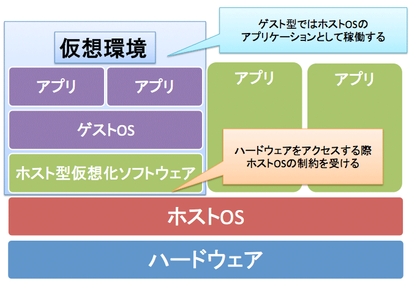
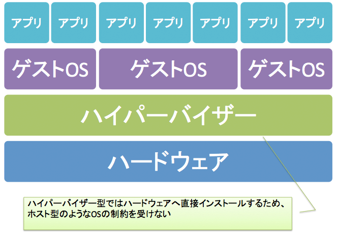
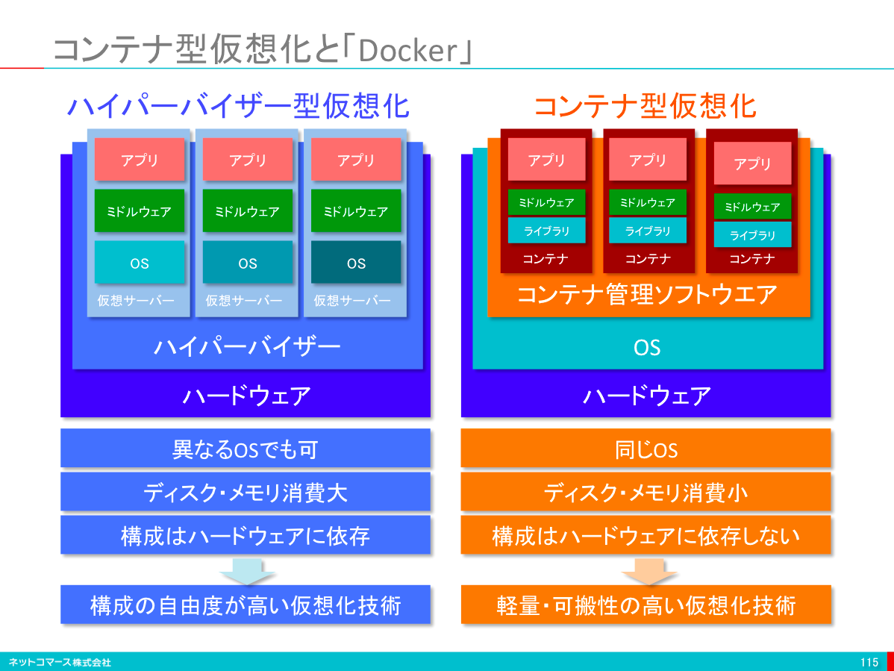
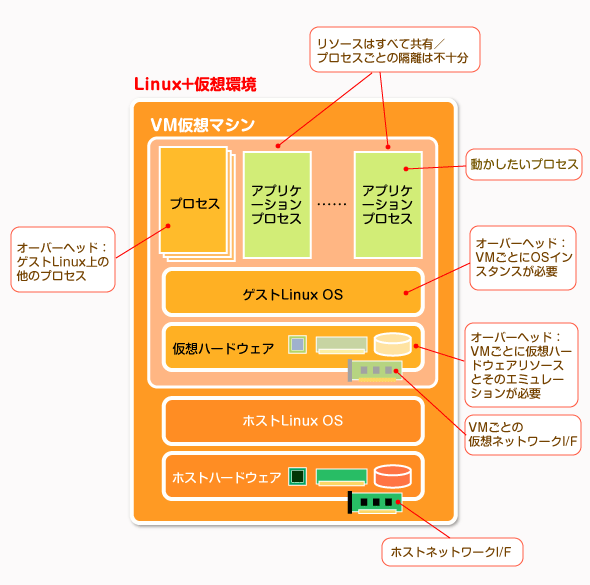
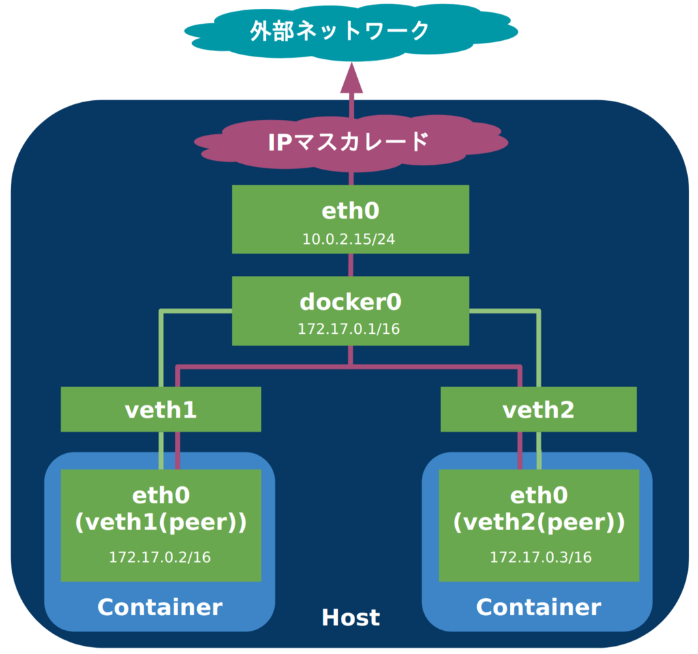

<!doctype html>
<html>
	<head>
		<meta charset="utf-8">
		<meta name="viewport" content="width=device-width, initial-scale=1.0, maximum-scale=1.0, user-scalable=no">

		<title>Docker研修</title>

		<link rel="stylesheet" href="css/reveal.css">
		<link rel="stylesheet" href="css/theme/solarized.css">
		<link href="https://fonts.googleapis.com/earlyaccess/notosansjapanese.css" rel="stylesheet" />

		<!-- Theme used for syntax highlighting of code -->
		<link rel="stylesheet" href="lib/css/zenburn.css">

		<style type="text/css">
		.reveal h1, .reveal h2, .reveal h3, .reveal h4, .reveal h5, .reveal h6 {
						text-transform: none;
						color: #007aad;
		}

		.reveal table {
			color: #2c6493;
		}

		.reveal pre code {
						max-height: 400px;
		}
		.reveal pre {
			box-shadow: initial;
		}
		</style>

		<!-- Printing and PDF exports -->
		<script>
			var link = document.createElement( 'link' );
			link.rel = 'stylesheet';
			link.type = 'text/css';
			link.href = window.location.search.match( /print-pdf/gi ) ? 'css/print/pdf.css' : 'css/print/paper.css';
			document.getElementsByTagName( 'head' )[0].appendChild( link );
		</script>
	</head>
	<body>
		<div class="reveal">
			<div class="slides">
				<section data-transition="cube" data-markdown data-separator="^\n---$" data-separator-vertical="^\n>>>$">
					<script type="text/template">


# Docker研修
<font size="50px">2017年12月18日</font>

---
<font size="60px" color="#db7aad">Agenda</font>
<br>
1. ##### VMとコンテナの違い
1. ##### Dockerの仕組み
1. ##### Dockerのセットアップ
1. ##### Dockerの基本操作
1. ##### MySQLコンテナを作成してみよう
1. ##### Docker上でWebアプリケーション作成
1. ##### Dockerイメージ
1. ##### tBCでの実例

---
## VMとコンテナの違い

>>>
## VM

* ホスト型
* ハイパーバイザー型

>>>
### ホスト型

<font size="3px">出典(https://thinkit.co.jp/story/2012/10/17/3722)</font>

>>>
## ホスト型
ホスト型はOS上に土台となるソフトウェアをインストールし、
<br>ソフトウェア上で仮想マシンを稼働させる方式
<br>
例：VMware Player, VMware Fusion, Windows7でのXPモード

>>>
<font size="30px" color="#db7aad">メリット</font>
<p>すでに利用しているサーバーやPCにもインストール可能</p>

<font size="25px" color="#7f64d9">デメリット</font>
<p>ハードウェアへアクセスするにはホストOSを経由する必要がある
<p>結果、余計なオーバーヘッドが発生して十分な性能が出ない</p>

>>>
### ハイパーバイザー型

<font size="3px">出典(https://thinkit.co.jp/story/2012/10/17/3722)</font>


>>>
## ハイパーバイザー型
サーバーへ直接インストールし仮想マシンを稼働させる方式
<br>

例：ESXi、Hyper-V、Xenなど

>>>
<font size="30px" color="#db7aad">メリット</font>
<p>ホストOSを必要としないためハードウェアを直接制御することが可能</p>
<p>そのため仮想マシンの速度低下を最小限に抑えられる</p>
<p>複数の仮想マシンを効率よく稼働させるための様々な仕組みが盛り込まれている</p>
<font size="25px" color="#7f64d9">デメリット</font>
<p>既存のホストOSをそのまま利用できなかったり、</p>
<p>専用の物理サーバーを用意する必要があったりする</p>

>>>
### コンテナ

<font size="3px">出典(http://blogs.itmedia.co.jp/itsolutionjuku/2015/05/docker.html)</font>

>>>
## コンテナの特徴①
* 単一のOS上で隔離された複数のコンテナが実行される
	* ベースとなるOSと異なるOS用のコンテナは実行できない
<br>(例:Linux上でWindowsコンテナを動かす)
	* コンテナ間でベースとなるOSは共有される

>>>
## コンテナの特徴②
* コンテナはプロセスとして実行され、仮想化は行われない
<br>
<font color="#db7aad">※仮想化とできることが似ているため</font>
<br><font color="#db7aad">「コンテナ型仮想化」と表現されることがある</font>
<br>
* Linux上ではLXCやlibcontainerが利用される

>>>
### VMとのちがい

* 仮想化の粒度
	* VM:<br>マシン単位での仮想化
	* コンテナ:<br>プロセス単位での仮想化

>>>
### ここまでのおさらい

>>>

<font size="3px">出典(http://www.atmarkit.co.jp/ait/articles/1701/30/news037.html)</font>

>>>

<font size="3px">出典(http://www.atmarkit.co.jp/ait/articles/1701/30/news037.html)</font>

>>>
### コンテナ概要
<p>単一のカーネル上で隔離されたプロセスをコンテナと呼ぶ</p>
<p>コンテナを複数実行することで、<u>あたかも複数のサーバーが動作しているかのように振る舞わせることができる</u></p>

>>>
<font size="30px" color="#db7aad">メリット</font>
* 構成が仮想化よりも単純なため高密度化が可能
* 仮想化よりもオーバーヘッドが少ない
* 新しいマシン(コンテナ)の起動がVMよりも高速

<font size="25px" color="#7f64d9">デメリット</font>
* OSと異なるシステムをコンテナを起動させることはできない
* カーネルを全てのコンテナで共有するため、カーネルに対する変更操作を個別に行うことができない

---
### Dockerとは

Linux上でコンテナを管理・実行するためのプラットフォーム

>>>
### Dockerの構成

* Docker Server
	* コンテナの管理・実行をおこなう
* Docker Client
	* Dockerを操作するためのアプリケーション
	* 利用者の指示に従ってDocker Serverを働かせる
* Dockerイメージ
	* コンテナの元になるひな形
	* リポジトリに保存される(複数のイメージが保存でき、IDやタグで指定できる)
	* Docker Hubと呼ばれるオンラインサービスで共有可能
* コンテナ
	* イメージを元に実行されたプロセス
	* 独立したホストとほとんど同じように扱うことができる

---
### Dockerのセットアップ
1. ### VMソフトウェアのインストール(VirtualBox+Vagrant)
1. ### VMのセットアップ
1. ### VMの起動
1. ### Dockerのインストール
1. ### ファイアーウォールの設定

>>>
### VMツールのインストール
Virtualbox(https://www.virtualbox.org/)
<br>
Vagrant(https://www.vagrantup.com/)

>>>
### VMのセットアップ
Vagrantで使用するOSをダウンロード
<br>
boxという形でOSが公開されている
<br>(http://www.vagrantbox.es/)
<br>以下コマンドでダウンロード
<pre>
<code class="shell">
$ vagrant box add {自分でつけたbox名} {vagrantboxのURL}
</code>
</pre>
<pre>
<code class="shell">
$ vagrant box add centos7 https://github.com/tommy-muehle/puppet-vagrant-boxes/releases/download/1.1.0/centos-7.0-x86_64.box
</code>
</pre>
<font color="#db7aad"><u>Virtualboxを使用しているので</u></font><br>
<font color="#db7aad"><u>"provider"が"virtualbox"のものを選択しないとダメ</u></font>

>>>
### 作業用ディレクトリの作成
<pre>
<code class="shell">
$ mkdir ~/works/vagrant/centos7

$ cd ~/works/vagrant/centos7
</code>
</pre>

>>>
### Vagrantの設定ファイルの作成
<pre>
<code class="shell">
$ vagrant init centos7
</code>
</pre>

>>>
### Vagrantの設定の変更
<pre>
<code class="shell">
$ vi Vagrantfile

# コメントを外す
config.vm.network "private_network", ip: "192.168.33.10"
</code>
</pre>
<font color="#db7aad">※もしinit時にbox名を指定し忘れた場合も同ファイル内で</font><br>
<font color="#db7aad">以下のように変更する</font>
<pre>
<code class="Vagrantfile">
	config.vm.box = "base"
									↓
	config.vm.box = "centos7"
</code>
</pre>

>>>
### VM起動
<pre>
<code class="shell">
	$ vagrant up

	$ vagrant status
	# runningになっていたらOK

	# ログイン
	$ vagrant ssh
</code>
</pre>

>>>
### その他コマンド
<pre>
<code class="shell">
	# ログアウト
	$ exit

	# サーバー停止
	$ vagrant halt

	# サーバーの削除
	$ vagrant destroy

	# Boxの削除
	$ vagrant box remove centos7
</code>
</pre>

---
### Dockerのインストール
<pre>
<code class="shell">
	$ yum -y install docker
</code>
</pre>

>>>
### サービスの起動
<pre>
<code class="shell">
	$ systemctl start docker

	$ systemctl enable docker
</code>
</pre>

---
### Docker基本操作
イメージのダウンロード
<pre>
<code class="shell">
	$ docker pull イメージ名
	# イメージ一覧を表示
	$ docker images
</code>
</pre>

コンテナの実行

<pre>
<code class="shell">
  # コマンド実行のみ
	$ docker run イメージ名 コマンド
	# シェル操作
	$ docker run -it イメージ名 /bin/bash
	# [CTRL]+[p] → [CTRL]+[q]でコンテナ実行したまま抜ける
	# [exit]コマンドで抜けるとコンテナが終了する
</code>
</pre>

>>>
コンテナの確認

<pre>
<code class="shell">
	# 実行中のコンテナ確認
	$ docker ps
	# 停止中のコンテナも確認
	$ docker ps -a
	# コンテナのアタッチ
	$ docker attach コンテナID
	# コンテナ停止
	$ docker stop コンテナID
	# コンテナ開始
	$ docker start コンテナID
	# コンテナ削除(停止しているコンテナのみ)
	$ docker rm コンテナID
	# 停止コンテナの一括削除
	$ docker rm $(docker ps -aq)

</code>
</pre>

>>>
### docker runの主なオプション

| オプション | 機能 |
|:----------------|:----------|
| -d | バックグラウンドで実行 |
| -i | コンテナの標準入力を開く(/bin/bash起動時に使用) |
| -t | tty(端末デバイス)を確保(/bin/bash起動時に使用) |
| -p xx:yy | ホストのポートxxをコンテナのyyにマッピング |
| -v ss:dd | ホストのディレクトリssをコンテナのディレクトリddにマウント |
| --rm | コンテナ終了時に自動的に削除する |
| -h | コンテナのホスト名を指定 |
| --name | コンテナに名前をつける |

>>>
### Dockerのネットワーク構成

<font size="3px">出典(http://tech.uzabase.com/entry/2017/08/07/172411)</font>

>>>
### Dockerの操作例
<pre>
<code class="shell">
	# イメージの取得
	$ docker pull ubuntu

	# コンテナの実行
	$ docker run --rm -it -h c1sv ubuntu /bin/bash

	# 稼働中のコンテナのIDを確認
	$ docker ps
</code>
</pre>

>>>
### Docker上でWebアプリケーションを作成
<pre>
<code class="shell">
	# 一体型のコンテナでWordpressを実行
	$ docker run -d -p 8888:80 --name=wordepress tutum/wordpress
</code>
</pre>

※PCのブラウザから
<br>http://LinuxのIPアドレス:8888 にアクセスして確認

>>>
#### 複数コンテナを連携させてWordpressを実行
<pre>
<code class="shell">
	$ docker run --name mysql -e MySQL_ROOT_PASSWORD=root -d mysql

	$ docker run --name wordpress --link mysql:mysql -p 8888:80 -d wordpress
</code>
</pre>

>>>
### Dockerイメージの作成
### 手順
1. ### Dockerfileの作成
1. ### Dockerfileのビルド
1. ### コンテナ起動

>>>
### Dockerfile作成
<pre>
<code class="Dockerfile">
	FROM centos

	RUN yum -y install httpd
	RUN yum clean all

	RUN sed -i -e ¥
	"s¥#ServerNamewww¥.example¥.com:80¥ServerName www.example.com:80/" ¥
	/etc/httpd/conf/httpd.conf

	ADD ./html/ /var/www/html/

	EXPOSE 80
	CMD ["/usr/sbin/httpd", "-D", "FOREGROUND"]
</code>
</pre>

>>>
### 動作検証
設定内容を検証する際は、
<br>以下のようにベースとなるイメージを実行し、
<br>直接操作を試してみる方法が有効
<br>
<font color="#db7aad"><u>※イメージ=Dockerfile内のFROMの部分</u></font>

<pre>
<code class="shell">
	$ docker run -it centos /bin/bash
</code>
</pre>

>>>
### Dockerfileのビルド
<pre>
<code class="shell">
	# 最後の"."はカレントにあるDockerfileをビルドするように指定している
	$ docker build -t local/httpd .
	$ docker images
</code>
</pre>

>>>
### コンテナ起動
* 作成したイメージを元にコンテナを起動する

<pre>
<code class="shell">
	$ docker run -p 8889:80 local/httpd
</code>
</pre>


					</script>
				</section>
			</div>
		</div>

		<script src="lib/js/head.min.js"></script>
		<script src="js/reveal.js"></script>

		<script>
			// More info about config & dependencies:
			// - https://github.com/hakimel/reveal.js#configuration
			// - https://github.com/hakimel/reveal.js#dependencies
			Reveal.initialize({
				history: true,
				overview: true,
				slideNumber: true,
				transition: 'cube',
				viewDistance: 3,

				dependencies: [
					{ src: 'plugin/markdown/marked.js' },
					{ src: 'plugin/markdown/markdown.js' },
					{ src: 'plugin/notes/notes.js', async: true },
					{ src: 'plugin/highlight/highlight.js', async: true, callback: function() { hljs.initHighlightingOnLoad(); } }
				]
			});
		</script>
	</body>
</html>
